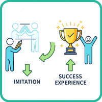

見本を真似して入力する

- プロンプト例
見本を真似して入力することは成功体験と言えるのか？
はい。「見本を真似して入力する」ことは、立派な成功体験です。
ただし、正しい位置づけで捉えることが重要です。
なぜ「真似」に意味があるのか？
1.「プログラミングの文法」が指に馴染む
- 「カッコの種類（() [] {}）」や「セミコロン（;）」の位置など、最初はミスしやすいポイントを体で覚えられます。
2. エラーとの戦い方を学べる
- 一字一句同じに打ったつもりでも、動かないことがよくあります。
- その「間違い探し」こそが、デバッグ（修正）能力を鍛える最高の訓練になります。
3. プロの「書き方のリズム」がわかる
- インデント（字下げ）や命名規則など、本に載っている「綺麗なコード」の型が自然に身につきます。
効果を爆上げする3つのルール
ただの作業にしないために、以下のことを意識してみてください。
「なぜこう書くのか？」を考えながら打つ
- 一行ごとに「これは画面に文字を出す命令だな」「ここで数字を保存しているな」と、意味を自分なりに解釈しながら打ちましょう。
コピペは絶対NG
- 自分の手で一文字ずつ打つことに意味があります。
- コピペだと、細かい文法規則が頭を通り過ぎてしまいます。
少しだけ改造してみる
- 見本通りに動いたら、数字を変えたり、表示されるメッセージを自分の好きな言葉に変えてみてください。
- 「ここを変えたらこう変わった！」という実感が、理解を一番深めてくれます。
🔰 なぜ「真似して入力」が成功体験なのか？
① プログラミングは「言語＋道具操作」
初心者にとっては、
- 英語
- 数学
- 論理
- パソコン操作
- 開発環境
これらを同時に学ぶことになります。
👉 その中で
「正しく打って、正しく動かせた」
これは十分すぎる成功体験です。
② 最初の壁は「動かすこと」
多くの初心者は
- 環境構築
- 文法ミス
- エラー
で挫折します。
見本どおりに打って動いた
→ これは最大の関門突破
③ 赤ちゃんの言語習得と同じ
人間は
- 真似る
- 繰り返す
- 無意識にパターンを覚える
という流れで学びます。
👉 模倣 → 理解 → 応用
この順番は、自然で最短です。
⚠️ ただし「真似だけ」で止まると成長しない
ここが重要です。
| 段階 | 状態 | 成長度 |
|---|---|---|
| ----- | --------- | ----- |
| 真似る | 書き写す | ★☆☆☆☆ |
| 少し変える | 数値・文字を変える | ★★★☆☆ |
| 自分で作る | ゼロから設計 | ★★★★★ |
🎯 成功体験に変える「正しい真似の仕方」
レベル1：写経
console.log('Hello');
→ まずは動かす
レベル2：改造
console.log('Good Morning');
→ 変えても動く！
レベル3：合体
name = prompt('名前：') console.log(`こんにちは ${name}`);
→ 部品を組み合わせる
レベル4：創作
→ 自分の目的で作る
🧠 成長が速い人の思考法
❌「理解してから書く」
⭕「書いてから理解する」
💬 よくある初心者の誤解
「見本を見ないと書けない私はダメ」
👉 全く逆です
プロのエンジニアも：
- 公式ドキュメント
- GitHub
- StackOverflow
- ChatGPT
を毎日見て真似しています。
🔥 本当の成功体験とは？
「昨日できなかったことが、今日はできた」
これが唯一の成功体験の定義です。